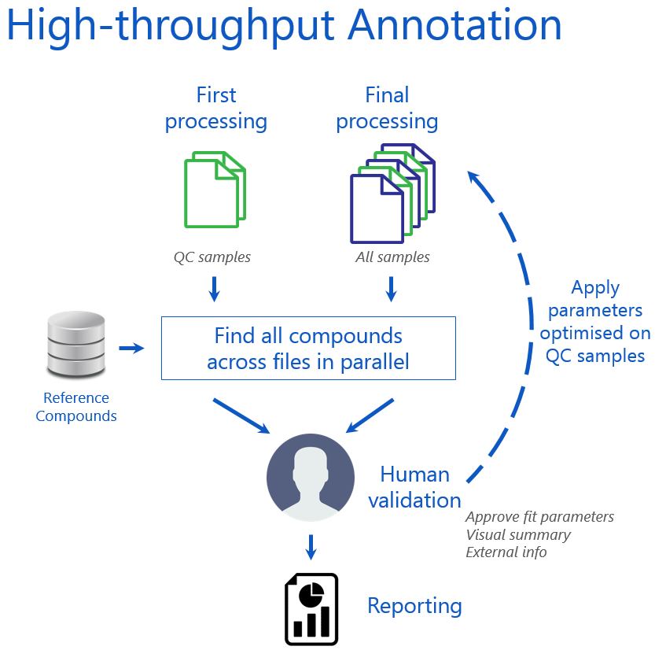
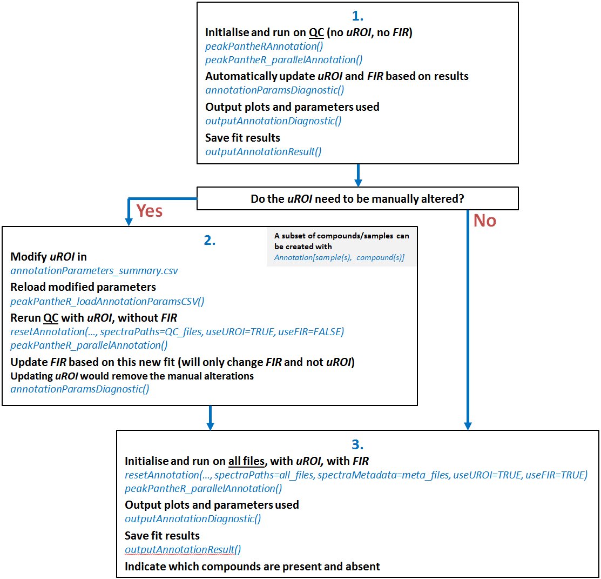
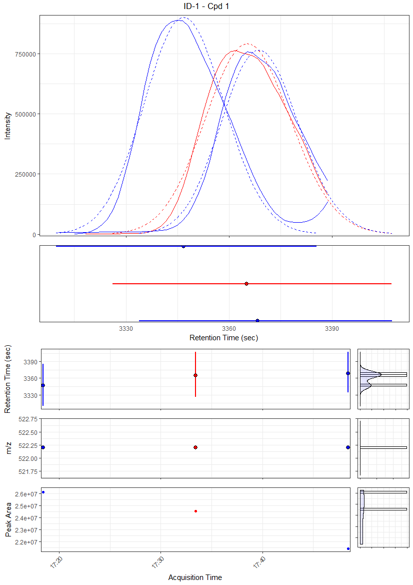
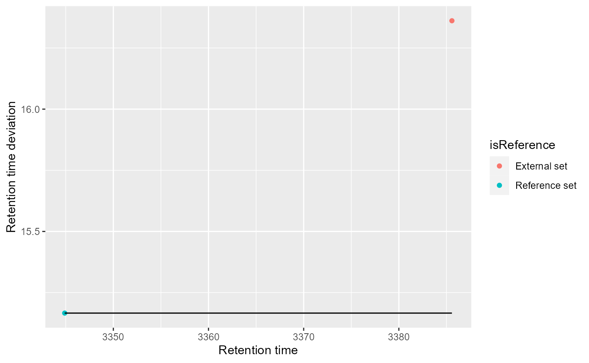

Package: peakPantheR
Authors: Arnaud Wolfer, Goncalo Correia
The peakPantheR package is designed for the detection, integration and reporting of pre-defined features in MS files (e.g. compounds, fragments, adducts, …).
The Parallel Annotation is set to detect and integrate multiple compounds in multiple files in parallel and store results in a single object. It can be employed to integrate a large number of expected features across a dataset.
Using the faahKO raw MS dataset as an example, this vignette will:
Parallel compound integration is set to process multiple compounds in multiple files in parallel, and store results in a single object.

To achieve this, peakPantheR will:

Diagram of the workflow and functions used for parallel annotation.
We can target 2 pre-defined features in 6 raw MS spectra file from the faahKO package using peakPantheR_parallelAnnotation(). For more details on the installation and input data employed, please consult the Getting Started with peakPantheR vignette.
First the paths to 3 MS file from the faahKO are located and used as input spectras. In this example these 3 samples are considered as representative of the whole run (e.g. Quality Control samples):
library(faahKO)
## file paths
input_spectraPaths <- c(system.file('cdf/KO/ko15.CDF', package = "faahKO"),
system.file('cdf/KO/ko16.CDF', package = "faahKO"),
system.file('cdf/KO/ko18.CDF', package = "faahKO"))
input_spectraPaths
#> [1] "C:/R/R-4.1.0/library/faahKO/cdf/KO/ko15.CDF"
#> [2] "C:/R/R-4.1.0/library/faahKO/cdf/KO/ko16.CDF"
#> [3] "C:/R/R-4.1.0/library/faahKO/cdf/KO/ko18.CDF"Two targeted features (e.g. compounds, fragments, adducts, …) are defined and stored in a table with as columns:
cpdID (numeric)cpdName (character)rtMin (sec)rtMax (sec)rt (sec, optional / NA)mzMin (m/z)mzMax (m/z)mz (m/z, optional / NA)
# targetFeatTable
input_targetFeatTable <- data.frame(matrix(vector(), 2, 8, dimnames=list(c(),
c("cpdID", "cpdName", "rtMin", "rt", "rtMax", "mzMin",
"mz", "mzMax"))), stringsAsFactors=FALSE)
input_targetFeatTable[1,] <- c("ID-1", "Cpd 1", 3310., 3344.888, 3390.,
522.194778, 522.2, 522.205222)
input_targetFeatTable[2,] <- c("ID-2", "Cpd 2", 3280., 3385.577, 3440.,
496.195038, 496.2, 496.204962)
input_targetFeatTable[,c(3:8)] <- sapply(input_targetFeatTable[,c(3:8)],
as.numeric)| cpdID | cpdName | rtMin | rt | rtMax | mzMin | mz | mzMax |
|---|---|---|---|---|---|---|---|
| ID-1 | Cpd 1 | 3310 | 3344.888 | 3390 | 522.194778 | 522.2 | 522.205222 |
| ID-2 | Cpd 2 | 3280 | 3385.577 | 3440 | 496.195038 | 496.2 | 496.204962 |
Additional compound and spectra metadata can be provided but isn’t employed during the fitting procedure:
# spectra Metadata
input_spectraMetadata <- data.frame(matrix(c("sample type 1", "sample type 2",
"sample type 1"), 3, 1,
dimnames=list(c(),c("sampleType"))),
stringsAsFactors=FALSE)| sampleType |
|---|
| sample type 1 |
| sample type 2 |
| sample type 1 |
A peakPantheRAnnotation object is first initialised with the path to the files to process (spectraPaths), features to integrate (targetFeatTable) and additional information and parameters such as spectraMetadata, uROI, FIR and if they should be used (useUROI=TRUE, useFIR=TRUE):
library(peakPantheR)
init_annotation <- peakPantheRAnnotation(spectraPaths = input_spectraPaths,
targetFeatTable = input_targetFeatTable,
spectraMetadata = input_spectraMetadata)The resulting peakPantheRAnnotation object is not annotated, does not contain and use uROI and FIR
init_annotation
#> An object of class peakPantheRAnnotation
#> 2 compounds in 3 samples.
#> updated ROI do not exist (uROI)
#> does not use updated ROI (uROI)
#> does not use fallback integration regions (FIR)
#> is not annotatedpeakPantheR_parallelAnnotation() will run the annotation across files in parallel (if ncores >0) and return the successful annotations (result$annotation) and failures (result$failures):
# annotate files serially
annotation_result <- peakPantheR_parallelAnnotation(init_annotation, ncores=0,
curveModel='skewedGaussian',
verbose=TRUE)
#> Processing 2 compounds in 3 samples:
#> uROI: FALSE
#> FIR: FALSE
#> ----- ko15 -----
#> Polarity can not be extracted from netCDF files, please set manually the polarity with the 'polarity' method.
#> Check input, mzMLPath must be a .mzML
#> Reading data from 2 windows
#> Data read in: 3.25 secs
#> Warning: rtMin/rtMax outside of ROI; datapoints cannot be used for mzMin/mzMax calculation, approximate mz and returning ROI$mzMin and ROI$mzMax for ROI #1
#> Found 2/2 features in 0.11 secs
#> Peak statistics done in: 0.01 secs
#> Feature search done in: 4.52 secs
#> ----- ko16 -----
#> Polarity can not be extracted from netCDF files, please set manually the polarity with the 'polarity' method.
#> Check input, mzMLPath must be a .mzML
#> Reading data from 2 windows
#> Data read in: 3.23 secs
#> Warning: rtMin/rtMax outside of ROI; datapoints cannot be used for mzMin/mzMax calculation, approximate mz and returning ROI$mzMin and ROI$mzMax for ROI #1
#> Warning: rtMin/rtMax outside of ROI; datapoints cannot be used for mzMin/mzMax calculation, approximate mz and returning ROI$mzMin and ROI$mzMax for ROI #2
#> Found 2/2 features in 0.05 secs
#> Peak statistics done in: 0.01 secs
#> Feature search done in: 4.44 secs
#> ----- ko18 -----
#> Polarity can not be extracted from netCDF files, please set manually the polarity with the 'polarity' method.
#> Check input, mzMLPath must be a .mzML
#> Reading data from 2 windows
#> Data read in: 3.21 secs
#> Warning: rtMin/rtMax outside of ROI; datapoints cannot be used for mzMin/mzMax calculation, approximate mz and returning ROI$mzMin and ROI$mzMax for ROI #1
#> Warning: rtMin/rtMax outside of ROI; datapoints cannot be used for mzMin/mzMax calculation, approximate mz and returning ROI$mzMin and ROI$mzMax for ROI #2
#> Found 2/2 features in 0.05 secs
#> Peak statistics done in: 0.01 secs
#> Feature search done in: 4.36 secs
#> Annotation object cannot be reordered by sample acquisition date
#> ----------------
#> Parallel annotation done in: 15.86 secs
#> 0 failure(s)
# successful fit
nbSamples(annotation_result$annotation)
#> [1] 3
data_annotation <- annotation_result$annotation
data_annotation
#> An object of class peakPantheRAnnotation
#> 2 compounds in 3 samples.
#> updated ROI do not exist (uROI)
#> does not use updated ROI (uROI)
#> does not use fallback integration regions (FIR)
#> is annotated
# list failed fit
annotation_result$failures
#> [1] file error
#> <0 rows> (or 0-length row.names)Based on the fit results, updated ROI (uROI) and fallback integration region (FIR) can be automatically determined using annotationParamsDiagnostic():
uROI are established as the min/max (rt and m/z) of the found peaks (+/- 5% in RT)FIR are established as the median of found rtMin, rtMax, mzMin, mzMax
updated_annotation <- annotationParamsDiagnostic(data_annotation, verbose=TRUE)
#> uROI will be set as mimimum/maximum of found peaks (+/-5% of ROI in retention time)
#> FIR will be calculated as the median of found "rtMin","rtMax","mzMin","mzMax"
# uROI now exist
updated_annotation
#> An object of class peakPantheRAnnotation
#> 2 compounds in 3 samples.
#> updated ROI exist (uROI)
#> does not use updated ROI (uROI)
#> does not use fallback integration regions (FIR)
#> is annotatedoutputAnnotationDiagnostic() will save to disk annotationParameters_summary.csv containing the original ROI and newly determined uROI and FIR for manual validation. Additionnaly a diagnostic plot for each compound is saved for reference and can be generated in parallel with the argument ncores:
# create a colourScale based on the sampleType
uniq_sType <- sort(unique(spectraMetadata(updated_annotation)$sampleType),
na.last=TRUE)
col_sType <- unname( setNames(c('blue', 'red'),
c(uniq_sType))[spectraMetadata(updated_annotation)$sampleType] )
# create a temporary location to save the diagnotic (otherwise provide the path
# to the selected location)
output_folder <- tempdir()
# output fit diagnostic to disk
outputAnnotationDiagnostic(updated_annotation, saveFolder=output_folder,
savePlots=TRUE, sampleColour=col_sType,
verbose=TRUE, ncores=2)The data saved in annotationParameters_summary.csv is as follow:
| cpdID | cpdName | X | ROI_rt | ROI_mz | ROI_rtMin | ROI_rtMax | ROI_mzMin |
|---|---|---|---|---|---|---|---|
| ID-1 | Cpd 1 | | | 3344.888 | 522.2 | 3310 | 3390 | 522.194778 |
| ID-2 | Cpd 2 | | | 3385.577 | 496.2 | 3280 | 3440 | 496.195038 |
| ROI_mzMax | X | uROI_rtMin | uROI_rtMax | uROI_mzMin | uROI_mzMax | uROI_rt |
|---|---|---|---|---|---|---|
| 522.205222 | | | 3305.75893 | 3411.43628 | 522.194778 | 522.205222 | 3344.888 |
| 496.204962 | | | 3337.37666 | 3462.44903 | 496.195038 | 496.204962 | 3385.577 |
| uROI_mz | X | FIR_rtMin | FIR_rtMax | FIR_mzMin | FIR_mzMax |
|---|---|---|---|---|---|
| 522.2 | | | 3326.10635 | 3407.27265 | 522.194778 | 522.205222 |
| 496.2 | | | 3365.02386 | 3453.40496 | 496.195038 | 496.204962 |

Diagnostic plot for compound 1: The top panel is an overlay of the extracted EIC across all samples with the fitted curve as dotted line. The panel under the EIC represent each found peak RT peakwidth (
rtMin,rtMaxand apex marked as dot), ordered with the first sample at the top. The bottom 3 panels represent foundRT(peakwidth),m/z(peakwidth) andpeak areaby run order, with the corresponding histograms to the right
ROI exported to .csv can be updated based on the diagnostic plots; uROI (updated ROI potentially used for all samples) and FIR (fallback integration regions for when no peak is found) can also be tweaked to better fit the peaks.
The optional retentionTimeCorrection() method provides an interface to adjust the expected ROI rt values and account for chromatographic batch effects. By comparing expected and found rt values for a set of reference compounds, a model of the chromatographic shift for the present batch can be established. This model can be in turned used to correct the expected retention time of all targeted compounds. In order to apply this method, the peakPantheRAnnotation must be previously annotated (isAnnotated=TRUE). The retention time correction algorithm to use can be selected using the method argument (currently polynomial and constant methods are available). retentionTimeCorrection() fits a correction function to model the dependency of the mean rt_dev_sec per reference feature with the expected databased retention time. If useUROI=TRUE, the expected retention time value is taken from the UROI_rt field, otherwise ROI_rt is used. If robust=TRUE, the RANSAC algorithm is used to automatically detect outliers and exclude them from the fit (this should only be used with a large number of reference features). retentionTimeCorrection() returns a list with 2 elements: * a modified peakPantheRAnnotation object * a ggplot2 diagnostic plot (optional, depending on whether TRUE or FALSE is passed to the diagnostic argument). The returned peakPantheRAnnotation object contains the same uROI and FIR mz values as the original annotation, but the retention time related parameters (rt, rtMin and rtMax) are replaced by the adjusted values. The rtMax and rtMin are set as the corrected rt value plus or minus half the value passed to the rtWindowWidth argument, respectively. useUROI is also set to TRUE. To continue with the workflow, simply set a new annotation object with the fit parameters established by retentionTimeCorrection() and call peakPantheR_parallelAnnotation() for the final annotation.

#> Warning in applyRTCorrection_checkInputParams(params, method, referenceTable):
#> `polynomialOrder` is larger than the number of references passed. `polynomialOrder`
#> will be set equal to number of reference compounds - 1Following this manual validation of the fit on reference samples, the modified parameters in the .csv file can be reloaded and applied to all study samples.
peakPantheR_loadAnnotationParamsCSV() will load the new .csv parameters (as generated by outputAnnotationDiagnostic()) and initialise a peakPantheRAnnotation object without spectraPaths, spectraMetadata or cpdMetadata which will need to be added before annotation. useUROI and useFIR are set to FALSE by default and will need to be modified according to the analysis to run. uROIExist is established depending on the .csv uROI column, and will only be set to TRUE if no NA are present. It is possible to reset the FIR values with the uROI windows using resetFIR().
update_csv_path <- '/path_to_new_csv/'
# load csv
new_annotation <- peakPantheR_loadAnnotationParamsCSV(update_csv_path)
#> uROIExist set to TRUE
#> New peakPantheRAnnotation object initialised for 2 compounds
new_annotation
#> An object of class peakPantheRAnnotation
#> 2 compounds in 0 samples.
#> updated ROI exist (uROI)
#> does not use updated ROI (uROI)
#> does not use fallback integration regions (FIR)
#> is not annotated
new_annotation <- resetFIR(new_annotation)
#> FIR will be reset with uROI valuesNow that the fit parameters were set on 3 representative samples (e.g. QC), the same processing can be applied to all study samples. resetAnnotation() will reinitialise all the results and modify the samples or compounds targeted as required:
## new files
new_spectraPaths <- c(system.file('cdf/KO/ko15.CDF', package = "faahKO"),
system.file('cdf/WT/wt15.CDF', package = "faahKO"),
system.file('cdf/KO/ko16.CDF', package = "faahKO"),
system.file('cdf/WT/wt16.CDF', package = "faahKO"),
system.file('cdf/KO/ko18.CDF', package = "faahKO"),
system.file('cdf/WT/wt18.CDF', package = "faahKO"))
new_spectraPaths
#> [1] "C:/R/R-4.1.0/library/faahKO/cdf/KO/ko15.CDF"
#> [2] "C:/R/R-4.1.0/library/faahKO/cdf/WT/wt15.CDF"
#> [3] "C:/R/R-4.1.0/library/faahKO/cdf/KO/ko16.CDF"
#> [4] "C:/R/R-4.1.0/library/faahKO/cdf/WT/wt16.CDF"
#> [5] "C:/R/R-4.1.0/library/faahKO/cdf/KO/ko18.CDF"
#> [6] "C:/R/R-4.1.0/library/faahKO/cdf/WT/wt18.CDF"Below we define the metadata of these new samples:
## new spectra metadata
new_spectraMetadata <- data.frame(matrix(c("KO", "WT", "KO", "WT", "KO", "WT"),
6, 1, dimnames=list(c(), c("Group"))),
stringsAsFactors=FALSE)| Group |
|---|
| KO |
| WT |
| KO |
| WT |
| KO |
| WT |
## add new samples to the annotation loaded from csv, useUROI, useFIR
new_annotation <- resetAnnotation(new_annotation, spectraPaths=new_spectraPaths,
spectraMetadata=new_spectraMetadata,
useUROI=TRUE, useFIR=TRUE)
#> peakPantheRAnnotation object being reset:
#> Previous "ROI", "cpdID" and "cpdName" value kept
#> Previous "uROI" value kept
#> Previous "FIR" value kept
#> Previous "cpdMetadata" value kept
#> New "spectraPaths" value set
#> New "spectraMetadata" value set
#> Previous "uROIExist" value kept
#> New "useUROI" value set
#> New "useFIR" value set
new_annotation
#> An object of class peakPantheRAnnotation
#> 2 compounds in 6 samples.
#> updated ROI exist (uROI)
#> uses updated ROI (uROI)
#> uses fallback integration regions (FIR)
#> is not annotatedWe can now run the final annotation on all samples with the optimised targeted features:
# annotate files serially
new_annotation_result <- peakPantheR_parallelAnnotation(new_annotation,
ncores=0, verbose=FALSE)
#> Polarity can not be extracted from netCDF files, please set manually the polarity with the 'polarity' method.
#> Warning in minpack.lm::nls.lm(par = init, lower = lower, upper = upper, : lmdif: info = -1. Number of iterations has reached `maxiter' == 50.
#> Polarity can not be extracted from netCDF files, please set manually the polarity with the 'polarity' method.
#> Polarity can not be extracted from netCDF files, please set manually the polarity with the 'polarity' method.
#> Fit of ROI #1 is unsuccessful (cannot determine rtMin/rtMax)
#> Polarity can not be extracted from netCDF files, please set manually the polarity with the 'polarity' method.
#> Warning in minpack.lm::nls.lm(par = init, lower = lower, upper = upper, : lmdif: info = -1. Number of iterations has reached `maxiter' == 50.
#> Polarity can not be extracted from netCDF files, please set manually the polarity with the 'polarity' method.
#> Warning in min(tmpPt$mz): no non-missing arguments to min; returning Inf
#> Warning in max(tmpPt$mz): no non-missing arguments to max; returning -Inf
#> Polarity can not be extracted from netCDF files, please set manually the polarity with the 'polarity' method.
#> Warning in minpack.lm::nls.lm(par = init, lower = lower, upper = upper, : lmdif: info = -1. Number of iterations has reached `maxiter' == 50.
# successful fit
nbSamples(new_annotation_result$annotation)
#> [1] 6
final_annotation <- new_annotation_result$annotation
final_annotation
#> An object of class peakPantheRAnnotation
#> 2 compounds in 6 samples.
#> updated ROI exist (uROI)
#> uses updated ROI (uROI)
#> uses fallback integration regions (FIR)
#> is annotated
# list failed fit
new_annotation_result$failures
#> [1] file error
#> <0 rows> (or 0-length row.names)The final fits can be saved to disk with outputAnnotationDiagnostic():
# create a colourScale based on the sampleType
uniq_group <- sort(unique(spectraMetadata(final_annotation)$Group),na.last=TRUE)
col_group <- unname( setNames(c('blue', 'red'),
c(uniq_sType))[spectraMetadata(final_annotation)$Group] )
# create a temporary location to save the diagnotic (otherwise provide the path
# to the selected location)
final_output_folder <- tempdir()
# output fit diagnostic to disk
outputAnnotationDiagnostic(final_annotation, saveFolder=final_output_folder,
savePlots=TRUE, sampleColour=col_group, verbose=TRUE)For each processed sample, a peakTables contains all the fit information for all compounds targeted. annotationTable( , column) will group the values across all samples and compounds for any peakTables column:
# peakTables for the first sample
peakTables(final_annotation)[[1]]| found | rtMin | rt | rtMax | mzMin | mz | mzMax | peakArea | peakAreaRaw |
|---|---|---|---|---|---|---|---|---|
| TRUE | 3322 | 3337 | 3337 | 522.2 | 522.2 | 522.2 | 4289965 | 4289965 |
| TRUE | 3363 | 3378 | 3378 | 496.2 | 496.2 | 496.2 | 7312556 | 7312556 |
| maxIntMeasured | maxIntPredicted | is_filled | ppm_error | rt_dev_sec |
|---|---|---|---|---|
| 711872 | NA | TRUE | NA | NA |
| 982976 | NA | TRUE | NA | NA |
| tailingFactor | asymmetryFactor | cpdID | cpdName |
|---|---|---|---|
| NA | NA | ID-1 | Cpd 1 |
| NA | NA | ID-2 | Cpd 2 |
# Extract the found peak area for all compounds and all samples
annotationTable(final_annotation, column='peakArea')| ID-1 | ID-2 | |
|---|---|---|
| C:/R/R-4.1.0/library/faahKO/cdf/KO/ko15.CDF | 4289965 | 7312556 |
| C:/R/R-4.1.0/library/faahKO/cdf/WT/wt15.CDF | 4355690 | 9278578 |
| C:/R/R-4.1.0/library/faahKO/cdf/KO/ko16.CDF | 46184 | 473801 |
| C:/R/R-4.1.0/library/faahKO/cdf/WT/wt16.CDF | 28157 | 475297 |
| C:/R/R-4.1.0/library/faahKO/cdf/KO/ko18.CDF | 141309 | 743452 |
| C:/R/R-4.1.0/library/faahKO/cdf/WT/wt18.CDF | 101738 | 1480713 |
Finally all annotation results can be saved to disk as .csv with outputAnnotationResult(). These .csv will contain the compound metadata, spectra metadata and a file for each column of peakTables (with samples as rows and compounds as columns):
# create a temporary location to save the diagnotic (otherwise provide the path
# to the selected location)
final_output_folder <- tempdir()
# save
outputAnnotationResult(final_annotation, saveFolder=final_output_folder,
annotationName='ProjectName', verbose=TRUE)
#> Compound metadata saved at /final_output_folder/ProjectName_cpdMetadata.csv
#> Spectra metadata saved at
#> /final_output_folder/ProjectName_spectraMetadata.csv
#> Peak measurement "found" saved at /final_output_folder/ProjectName_found.csv
#> Peak measurement "rtMin" saved at /final_output_folder/ProjectName_rtMin.csv
#> Peak measurement "rt" saved at /final_output_folder/ProjectName_rt.csv
#> Peak measurement "rtMax" saved at /final_output_folder/ProjectName_rtMax.csv
#> Peak measurement "mzMin" saved at /final_output_folder/ProjectName_mzMin.csv
#> Peak measurement "mz" saved at /final_output_folder/ProjectName_mz.csv
#> Peak measurement "mzMax" saved at /final_output_folder/ProjectName_mzMax.csv
#> Peak measurement "peakArea" saved at
#> /final_output_folder/ProjectName_peakArea.csv
#> Peak measurement "maxIntMeasured" saved at
#> /final_output_folder/ProjectName_maxIntMeasured.csv
#> Peak measurement "maxIntPredicted" saved at
#> /final_output_folder/ProjectName_maxIntPredicted.csv
#> Peak measurement "is_filled" saved at
#> /final_output_folder/ProjectName_is_filled.csv
#> Peak measurement "ppm_error" saved at
#> /final_output_folder/ProjectName_ppm_error.csv
#> Peak measurement "rt_dev_sec" saved at
#> /final_output_folder/ProjectName_rt_dev_sec.csv
#> Peak measurement "tailingFactor" saved at
#> /final_output_folder/ProjectName_tailingFactor.csv
#> Peak measurement "asymmetryFactor" saved at
#> /final_output_folder/ProjectName_asymmetryFactor.csv
#> Summary saved at /final_output_folder/ProjectName_summary.csv